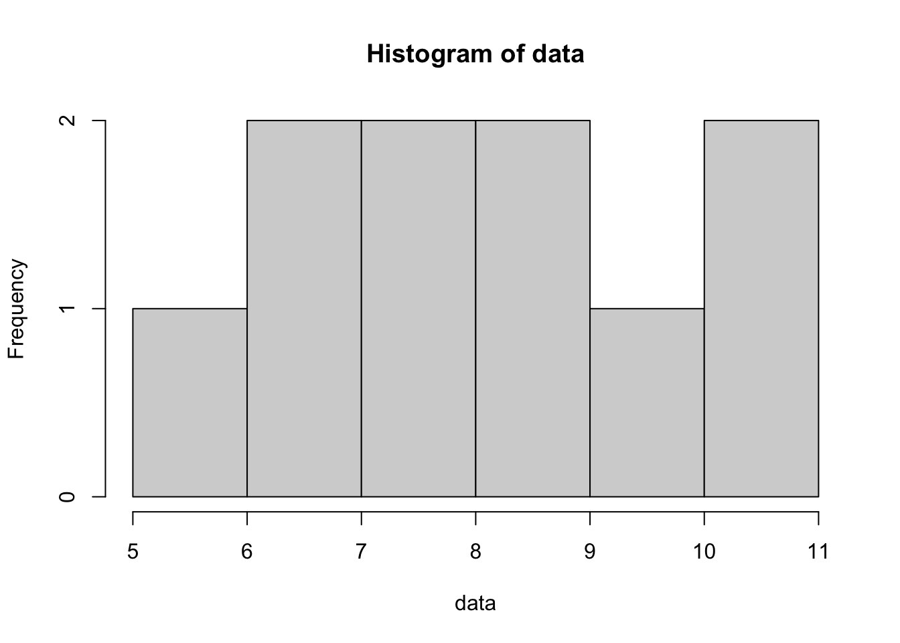
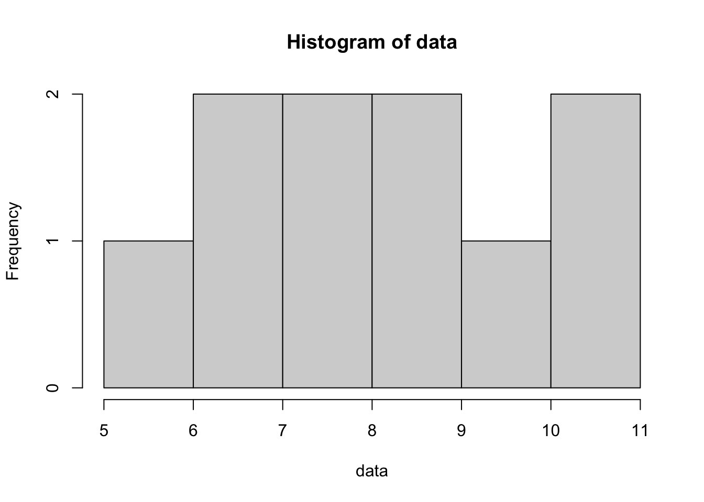
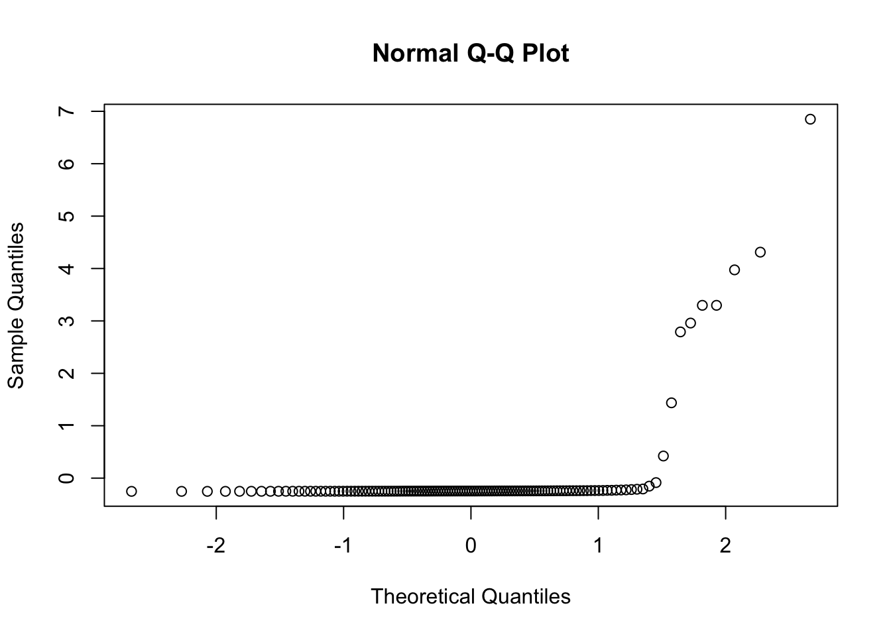
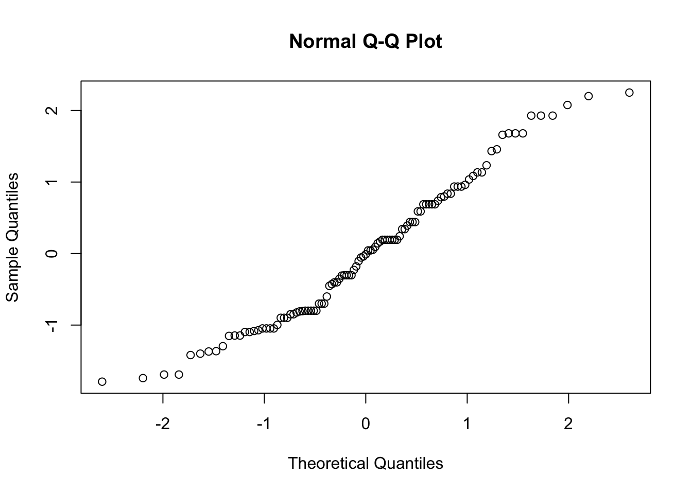

data <- c(5, 7, 8, 9, 11, 10, 7, 8, 9, 11)
n<-length(data)
hist(data)
qqnorm(data)
Testing: \(H_0: X\) is normally distributed
The Shapiro-Wilk test assess how well an observed variable fits a normal distribution. It is similar to testing the correlation between the ordered sample values and the expected ones from a normal distribution.
It computes a W statistic, which measures how well the ordered sample values match the expected values from the normal distribution. If they don’t correlate well, the W statistic is significantly lower than expected and the null hypothesis of normality is rejected.
Suppose a data of 10 values. We are not quite sure they are normally distributed after looking at the histogram or the qq plot against a normal distribution (qqnorm())
data <- c(5, 7, 8, 9, 11, 10, 7, 8, 9, 11)
n<-length(data)
hist(data)
qqnorm(data)
We perform a shapiro-wilk test as follows:
shapiro.test(data)
#>
#> Shapiro-Wilk normality test
#>
#> data: data
#> W = 0.95259, p-value = 0.6992showing we can’t reject the null hypothesis. There is no significant evidence against the data being normally distributed.
We have seen earlier that an approach to check normality could be to use a chi-squared test after binning and checking observed counts and expected counts along a normal distribution (goodness of fit chi-squared). The approach of Shapiro-Wilk is technically closer to a correlation coefficient. See how the W statistic is obtained:
First, the data is sorted and deviations to the mean computed:
n <- length(data)
sorted_data <- sort(data)
dev_sort<-sorted_data-mean(data)
dev_sort
#> [1] -3.5 -1.5 -1.5 -0.5 -0.5 0.5 0.5 1.5 2.5 2.5Second, expected values from a standard normal distribution are computed based on qnorm() function:
qnorm((1:n) / (n))
#> [1] -1.2815516 -0.8416212 -0.5244005 -0.2533471 0.0000000 0.2533471
#> [7] 0.5244005 0.8416212 1.2815516 Inf
expected_vals <- qnorm((1:n - 0.375) / (n + 0.25))
expected_vals
#> [1] -1.5466353 -1.0004905 -0.6554235 -0.3754618 -0.1225808 0.1225808
#> [7] 0.3754618 0.6554235 1.0004905 1.5466353As you can see the values are not exactly those from the qnorm() function to avoid an infinity and to correct for small sample size (see the addition of -0.375 and 0.25 terms)
Those expected values are then scaled after the sum of squares (and the units become irrelevant) to make expected weights
weights <- expected_vals / sqrt(sum(expected_vals^2))Then those weights are multiplied by the observed deviations to the mean. This cross-product (see numerator) is where it is similar to a correlation coefficient: if both observed and expected vary together the value is high:
numerator <- sum(weights * dev_sort)^2
denominator <- sum(dev_sort^2)
W<-numerator/denominator
W
#> [1] 0.9587322library(AER)
#> Warning: package 'AER' was built under R version 4.4.1
#> Loading required package: car
#> Loading required package: carData
#> Loading required package: lmtest
#> Loading required package: zoo
#>
#> Attaching package: 'zoo'
#> The following objects are masked from 'package:base':
#>
#> as.Date, as.Date.numeric
#> Loading required package: sandwich
#> Loading required package: survival
data(Parade2005)
attach(Parade2005)
shapiro.test(earnings)
#>
#> Shapiro-Wilk normality test
#>
#> data: earnings
#> W = 0.27025, p-value < 2.2e-16
shapiro.test(log(earnings))
#>
#> Shapiro-Wilk normality test
#>
#> data: log(earnings)
#> W = 0.6562, p-value = 5.06e-16
shapiro.test(earnings[celebrity=='no'])
#>
#> Shapiro-Wilk normality test
#>
#> data: earnings[celebrity == "no"]
#> W = 0.51054, p-value < 2.2e-16
qqnorm(scale(earnings))
qqnorm(scale(earnings[earnings < 100000]))